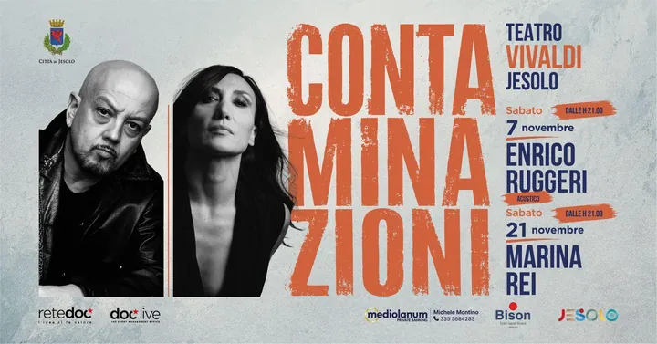

sab 21 nov
Contaminazioni - Marina Rei
Sabato 21 novembre ospite al Teatro Vivaldi Marina Rei: musicista, cantautrice, batterista figlia di Enzo Restuccia, batterista dell'orchestra di Ennio Morricone e turnista, e di Anna Giordano, violista dell'orchestra sinfonica di Roma, Marina Restuccia è cresciuta con la…
 Indicazioni
Indicazioni
- Costi e prenotazioni
- Costo non indicato · Prenotazione non indicata
- Programma
- Programma da verificare. Apri la fonte ufficiale per orari e possibili aggiornamenti.
- In caso di maltempo
- Nessuna indicazione specifica pubblicata.
- Note
- Acquisito automaticamente dalla fonte.
L’EVENTO
Descrizione completa
Sabato 21 novembre ospite al Teatro Vivaldi Marina Rei: musicista, cantautrice, batterista figlia di Enzo Restuccia, batterista dell'orchestra di Ennio Morricone e turnista, e di Anna Giordano, violista dell'orchestra sinfonica di Roma, Marina Restuccia è cresciuta con la passione per l'arte, per la musica e le percussioni in particolare grazie anche all'influenza dei genitori che la abituano al jazz e al soul, ma anche alla musica classica.
La caratteristica della sua musica è la contemporaneità ,seguendo sempre le contaminazioni musicali un misto tra pop, dance, acid jazz e soul . Numerose le sue partecipazioni ai programmi musicali italiani come Festivalbar, Vota la Voce, Un disco per l’estate, Premio Amnesty, Premio Lumezia e ben 4 partecipazioni al Festival di Sanremo.
CONTAMINAZIONI 2026 vuole consolidare così un percorso culturale fatto di frequenze musicali ricercate che stimolano un viaggio emozionante tra sonorità uniche, con l’obiettivo di dare voce e valorizzare l’incontro tra diverse culture e stili musicali. Un connubio tra rock, pop, canzone d’autore, folklore e identità, che trovano casa in un territorio come la Città di Jesolo, che, attraverso la sua rinomata ospitalità, accoglie e valorizza il melting pot del mondo.
I biglietti si possono acquistare in prevendita presso circuiti Dice
IL PROGRAMMA
Programma e orari
Appuntamenti raccolti dalle fonti elencate. Dove manca un orario, non è ancora disponibile in questa scheda.
Programma pubblicato
- 2026-11-21 — 2026-11-21 · 21:00:00
INFORMAZIONI UTILI
Prima di partire
- Controllare la fonte prima di partire.
ORGANIZZAZIONE